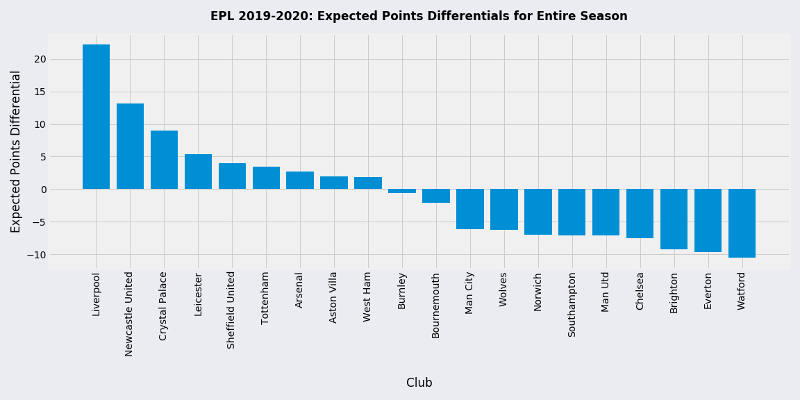

Season Points Accrual vs. Expected Points
Expected points takes other expected metrics into account to predict the average amount of points that a club can expect to receive from a match played under the same circumstances. In association football, a win earns a club three (3) points, a draw earns one (1) point, and a loss earns zero (0) points. A large differential in points can summarize the aggregated effects of the other expected metrics. They can often signal intangible attributes to a season, such as luck, defender positioning, management style, and formational variations.
Liverpool outperformed their expected points by an enormous margin, with some claiming that their winning the league by such a large margin may have been down to luck. Newcastle also greatly overperformed their expected points, which would have seen them relegated without such an overperformance. Watford greatly underperformed their expected points tally, which did see them relegated from the league.